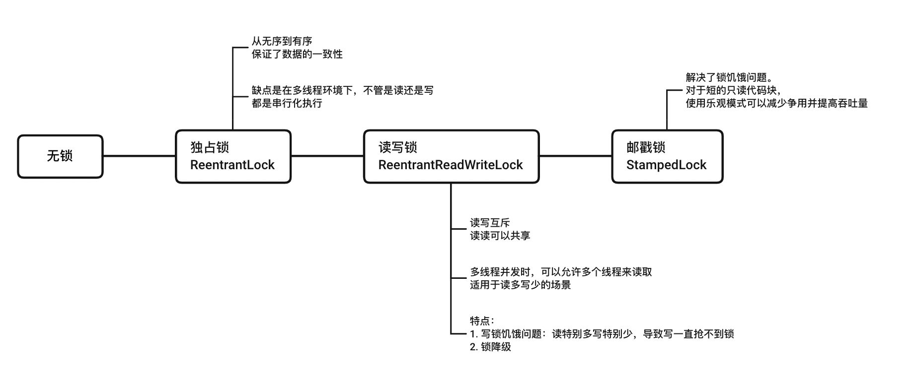
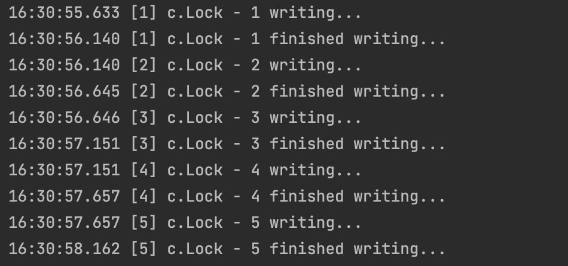
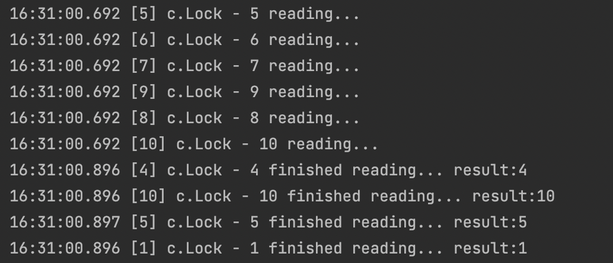
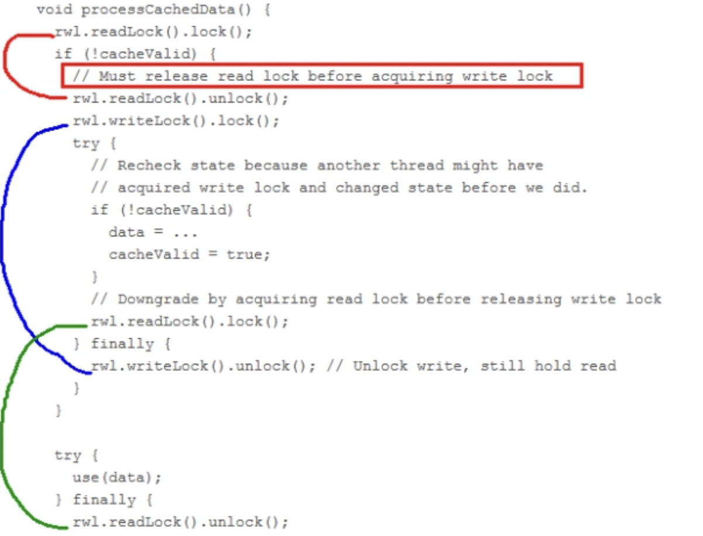
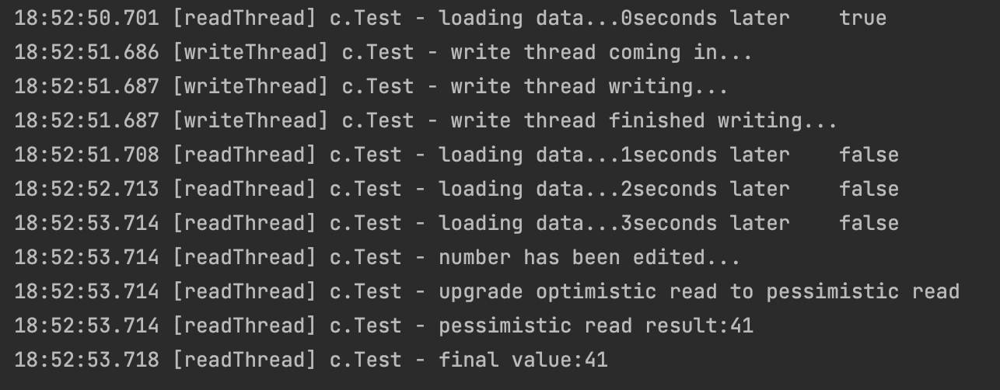

JUC-读写锁+StampedLock
锁的演化历程：

8.ReentrantReadWriteLock
读写锁：一个资源能被多个读线程访问，或者被一个写线程访问，但不能同时存在读写线程。即读写互斥，读读共享，写的时候不能读，读的时候不能写。读操作没有完成前，写操作不能获得锁。
只有在读多写少的场景下，读写锁才有较高的性能体现。
8.1 读写锁代码演示
10个线程进行写操作，10个线程进行读操作：
1
2
3
4
5
6
7
8
9
10
11
12
13
14
15
16
17
18
19
20
21
22
23
24
25
26
27
28
29
30
31
32
33
34
35
36
37
38
39
40
41
42
43
44
45
46
47
48
49
| public class Test1 {
public static void main(String[] args) throws InterruptedException {
MyResource resource = new MyResource();
for (int i = 1; i <= 10; i++) {
int finalI = i;
new Thread(()->{
resource.write(finalI+"",finalI+"");
},String.valueOf(i)).start();
}
for (int i = 1; i <= 10; i++) {
int finalI = i;
new Thread(()->{
resource.read(finalI+"");
},String.valueOf(i)).start();
}
}
}
@Slf4j(topic = "c.Lock")
class MyResource{
Map<String,String> map = new HashMap<>();
ReadWriteLock rwLock = new ReentrantReadWriteLock();
public void write(String key, String value){
rwLock.writeLock().lock();
try {
log.debug("{} writing...",Thread.currentThread().getName());
map.put(key,value);
Thread.sleep(500);
log.debug("{} finished writing...",Thread.currentThread().getName());
} catch (InterruptedException e) {
e.printStackTrace();
} finally {
rwLock.writeLock().unlock();
}
}
public void read(String key){
rwLock.readLock().lock();
try {
log.debug("{} reading...",Thread.currentThread().getName());
String result = map.get(key);
Thread.sleep(200);
log.debug("{} finished reading... result:{}",Thread.currentThread().getName(),result);
} catch (InterruptedException e) {
e.printStackTrace();
} finally {
rwLock.readLock().unlock();
}
}
}
|
根据输出，确定读写锁在写的时候是独占锁的，不能有人中断。但在读的时候，别人也可以一起读。


8.2 锁降级
ReentrantReadWriteLock锁降级，就是将写入锁降级为读锁。因为一般来说写的权限是要高于读的。具体来说：
- 因为有可重入的特性，如果一个线程持有了写锁，在没有释放写锁的情况下，它还可以获得读锁，这就是写锁的降级，降级成为了读锁。
- 按照规则，线程遵循先获取写锁，再获取读锁，然后释放写锁的次序。
- 一旦释放了写锁，就完全转换为读锁。
写锁可以降级为读锁，读锁不能升级为写锁。
1
2
3
4
5
6
7
| writeLock.lock();
log.debug("writing...");
readLock.lock();
log.debug("reading...");
readLock.unlock();
writeLock.unlock();
|
输出：
1
2
| 17:06:53.459 [main] c.Test - writing...
17:06:53.461 [main] c.Test - reading...
|
但如果把读锁放在前面：
1
2
3
4
5
6
7
| readLock.lock();
log.debug("reading...");
writeLock.lock();
log.debug("writing...");
readLock.unlock();
writeLock.unlock();
|
写线程就会被阻塞，读锁没有释放，写锁就进不去。这是一种悲观的读锁。
8.2.1 为什么要锁降级？
一个锁降级的使用案例：
一个CachedData类中定义了一个volatile修饰的boolean变量cacheValid，定义了一个方法processCachedData：

首先获取读锁，如果cache为空，则释放读锁，获取写锁。在更改数据之前，再一次检查cacheValid，然后修改数据，然后将cacheValid置为true，然后在释放写锁前立刻抢夺读锁，此时因为有读锁在操作，别的写线程就不能获得写锁，等该读锁完成了use(data)中的方法，释放读锁后，别的写线程才能进行操作。
这就是锁降级的完整过程，目的是保证数据可见性。
如果当前线程A在修改完cache的数据后，直接释放写锁，而不是先获得读锁，也就是把绿线的rwl.readLock().lock()放到下面的try块中的话，那么在释放写锁和获得读锁之间，可能会有别的线程B获取写锁并修改了数据，那么A无法感知到数据已经被修改，数据就出现了错误。
锁降级的本质是释放掉独占锁，使其他线程可以获取到读锁，提高并发，而当前线程持有读锁来保证数据的可见性。
9. StampedLock
StampedLock是比读写锁更快的锁。是JDK1.8新增的一个读写锁，也是对JDK1.5中读写锁的优化。它是由锁饥饿问题引出来的。
9.1 锁饥饿问题
ReentrantReadWriteLock实现了读写分离，但是一旦读操作比较多，想要获取写锁就比较困难了。比如有1000个线程，999个读，1个写，有可能999个读线程长时间抢到锁，那1个写线程就可能会因为一直存在读锁儿无法获得写锁。
于是有了StampedLock，它是乐观锁，读线程获得读锁后，其他线程尝试获取写锁时不会被阻塞。
9.2 特点
- 所有获取锁的方法，都返回一个Stamp，Stamp为0表示获取失败，其余表示获取成功。
- 所有释放锁的方法，都需要一个参数Stamp，这个Stamp必须和成功获取锁时得到的Stamp一致。
- StampedLock是不可重入的。
- StampedLock有三种访问模式：Read悲观读模式（和读写锁的读锁类似） / Write写模式（和读写锁的写锁类似）/ OptimisticReading乐观读模式（无锁机制，类似于数据库中的乐观锁，支持读写并发，乐观地认为读取时没人修改，如果被修改了再升级为悲观读模式）
9.3 代码演示
有一个静态变量number = 30，在乐观读的期间，写线程介入修改了变量，乐观读升级为悲观读：
1
2
3
4
5
6
7
8
9
10
11
12
13
14
15
16
17
18
19
20
21
22
23
24
25
26
27
28
29
30
31
32
33
34
35
36
37
38
39
40
41
42
43
44
45
46
47
48
49
50
51
52
53
54
55
56
57
58
59
60
| @Slf4j(topic = "c.Test")
public class Test1 {
static int number = 30;
static StampedLock stampedLock = new StampedLock();
public void tryOptimisticRead(){
long stamp = stampedLock.tryOptimisticRead();
int result = number;
for (int i = 0; i < 4; i++) {
try {
Thread.sleep(1000);
} catch (InterruptedException e) {
e.printStackTrace();
}
log.debug("loading data..."+i+"seconds later\t"+stampedLock.validate(stamp));
}
if (!stampedLock.validate(stamp)){
log.debug("number has been edited...");
stamp = stampedLock.readLock();
try {
log.debug("upgrade optimistic read to pessimistic read");
result = number;
log.debug("pessimistic read result:{}",result);
}finally {
stampedLock.unlockRead(stamp);
}
}
log.debug("final value:{}",result);
}
public void write(){
long stamp = stampedLock.writeLock();
log.debug("write thread writing...");
try {
number = number + 11;
}finally {
stampedLock.unlockWrite(stamp);
}
log.debug("write thread finished writing...");
}
public static void main(String[] args) throws InterruptedException {
Test1 resource = new Test1();
new Thread(()->{
resource.tryOptimisticRead();
},"readThread").start();
Thread.sleep(2000);
new Thread(()->{
log.debug("write thread coming in...");
resource.write();
},"writeThread").start();
}
}
|
输出：

关键就是stampedLock.validate(long stamp)这个方法，判断在读期间这个值有没有被修改过。
9.4 StampedLock缺点与注意点
- StampedLock不支持重入。
- StampedLock的悲观读锁和写锁都不支持条件变量Condition。
- 使用StampedLock一定不要调用中断操作，即不要调用interrupt()方法。